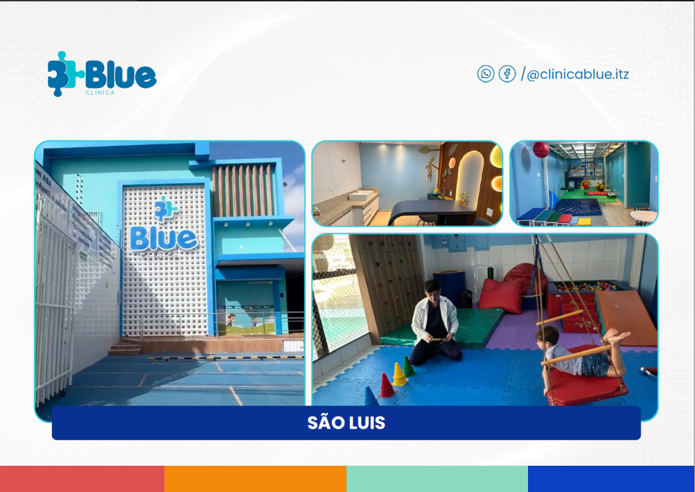
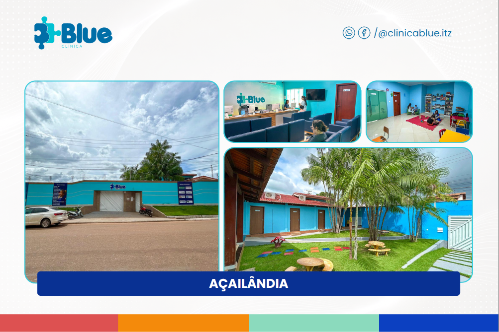
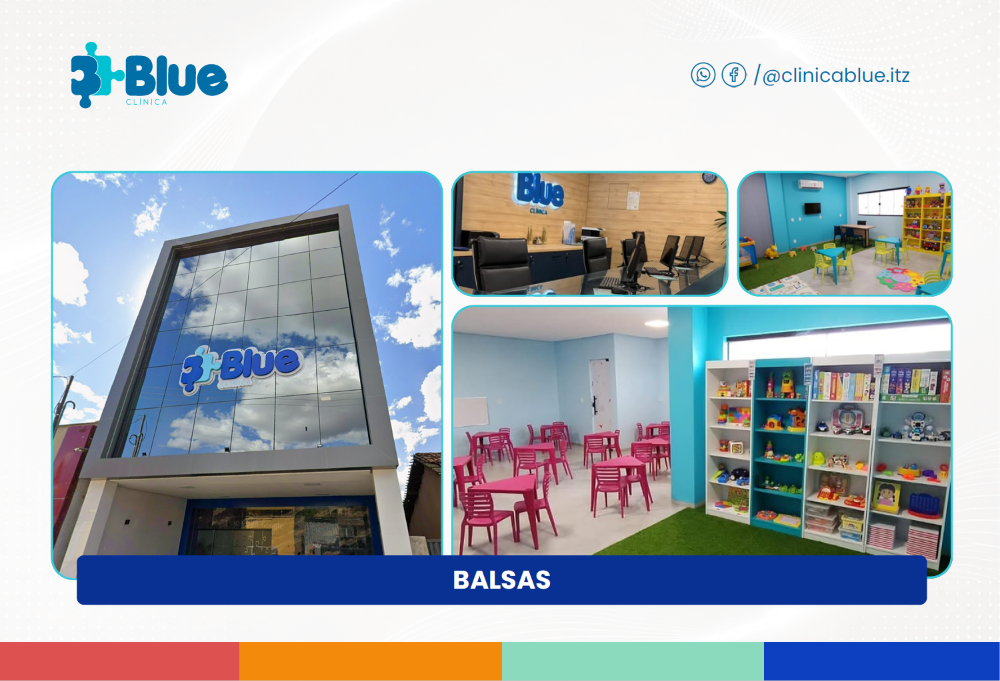

Neurodesenvolvimento
Estimulação e acompanhamento do desenvolvimento neurológico e da aprendizagem.
- Terapia ABA
- Avaliação Neuropsicológica
- Neuropsicopedagogia
- Psicopedagogia
Atendimento multidisciplinar baseado em evidências para promover desenvolvimento, autonomia e qualidade de vida de crianças, adolescentes e suas famílias.
A Blue nasceu em 06 de outubro de 2020, em São Luís (MA), a partir da vivência de uma mãe atípica e da necessidade de oferecer um cuidado mais especializado, acessível e coordenado.
Com o crescimento da instituição, a Blue expandiu sua atuação para Imperatriz, ampliando o acesso ao atendimento multidisciplinar, acolhedor e qualificado.
Hoje, a unidade reúne estrutura moderna, equipe especializada, segurança assistencial e excelência terapêutica — unindo ciência, ética, inclusão e compromisso com resultados.
Oferecer cuidado multidisciplinar, baseado em evidências, para promover desenvolvimento, autonomia e qualidade de vida.
Ser referência regional em cuidado infantil especializado, reconhecida pela excelência terapêutica, inovação e impacto real na vida das famílias.
Estimulação e acompanhamento do desenvolvimento neurológico e da aprendizagem.
Avaliação e reabilitação das funções motoras, sensoriais e da comunicação.
Recursos modernos que ampliam os resultados e o engajamento na terapia.
Suporte emocional, comportamental e nutricional para a criança e a família.
A Blue oferece uma estrutura completa para quem busca cuidado especializado, acolhimento e desenvolvimento.
Práticas baseadas em evidências e protocolos atualizados que orientam cada decisão terapêutica.
Ambiente seguro e protocolos assistenciais rigorosos que protegem cada criança.
Profissionais de múltiplas áreas trabalhando de forma integrada em torno de cada família.
Terapias coordenadas em um plano único, com comunicação clara entre especialistas e famílias.
Ambientes modernos, seguros e sensorialmente preparados para o desenvolvimento infantil.



A Blue está presente em diferentes cidades do Maranhão, ampliando o acesso ao cuidado terapêutico especializado com estrutura, acolhimento e atuação multidisciplinar.
Onde tudo começou
Unidade completa
Acesso ampliado
Cuidado regional
Uma rede de cuidado preparada para acolher, orientar e transformar jornadas.
Mais do que atender: construímos, com você, uma jornada de acolhimento, clareza e evolução. Agende uma avaliação e dê o primeiro passo.